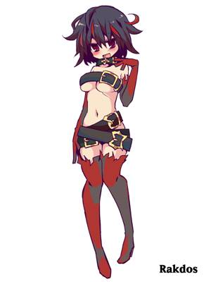

杰斯走进拉铎斯俱乐部，推开一堵香水与天籁交杂而成的高墙。室内的天花板高得惊人，无数的横幅与带
刺的铁链从天花板垂下。一只小鬼般的生物在一根高铁线上晃来晃去，一只穿着皮裤的男人吞下了几颗火
球，然后从他那犬牙差互状的牙齿间把它们吐了出来。伤痕累累、长满黑色鳞片的龙兽在从天花板上垂下
的笼中恶意地撕斗着，临近的壁龛里飘出汗水和焦肉混杂的臭味。靠着墙站着一个巨大的哨兵，站在矮胖
的人和矮胖的巨人之间，穿着一件看上去像一个用带刺的铁丝穿过的小丑衣服。
――――道戈・拜耳的《再访拉尼卡：解密人》
――――――――――――――――――――――――――――――――――――――――――
明日是幻;万事皆谬。拉铎斯教派的成员见证了其他公会浮夸的演讲和自高自大的计划，得出的结论是，他
们的竞争对手太把自己当回事了。既然众生皆死，既然诸序具乱，拉铎斯们相信，无拘无束、时时刻刻的
享乐主义是唯一明智的生活方式。当然，很少有其他拉尼卡人会把拉铎斯形容为神志清醒。
拉铎斯教派以创建它的恶魔领主的名字命名。正如《公会公约》所规定的，这个公会旨在填补涉及娱乐、
采矿和体力劳动方面的角色空缺。有些人认为，任何让恶魔崇拜教派在社会中扮演正面角色的努力都注定
要失败，但这种崇拜仍然是拉尼卡社会结构的一部分。公会协议禁止邪教的灭绝，而它的娱乐活动――即
使像它们一样深暗并及具破坏性――但仍具有广泛的吸引力。从喜欢看到拉铎斯攻击权贵精英的暴民，到
为了非法娱乐而来到拉铎斯的颓废社会名流，大多数拉尼卡的人并不希望拉铎斯被攻击而消失，否则他们
可能会公开抗议。
教派内部
作为拉尼卡最初的公会创始人之一，恶魔拉铎斯几千年来一直是拉夫尼卡的一部分，其他一些公会的成员
知道拉铎斯以其变幻无常的残忍和狂妄自大而闻名，但那些加入拉铎斯教派的人崇拜他，因为他的存在如
同一个磁场一般，激发了艺术与彻底的放纵。因为拉铎斯发现了毁灭的乐趣，他的信徒便将致命的行为融
入他们的表演，希望能引起他的注意并赢得他的青睐。
拉尼卡的街道和广场上每天晚上都有拉铎斯们表演的舞台，他们早上就会从巨人的背上被搬来抬去。为满
足黑暗欲望的建筑被永久的隐藏在城市最破旧的街区，比如第十区中第六区的矿石提炼厂。
拉铎斯的目的
拉铎斯教派以恶魔领主为中心，他是混乱和邪恶的典范。最糟糕的是。这种崇拜是由对权力的渴望所驱动
的。极度自私，及缺乏同情心。//信徒们以制造他人痛苦为乐，以确保他们知道自己的“位置”来屈从于这
些以自我为中心的哲学的拥护者//
邪教的混乱本性助长了它的激情、冲动和对自由的痴迷。这是一个放纵享乐主义的公会，它为所欲为，充
斥着卑鄙的欲望和强烈的残忍。
拉铎斯教派最初是一个公会，将恶魔、巨人、食人魔和人类的冲动引向一个可接受的方向的公会。这种努
力从来没有完全成功过。如今，随着拉尼卡紧张局势的加剧，一些公会试图镇压紧张局势带来的混乱和犯
罪活动，但拉铎斯教派对这种压力的反应是增加暴力，让混乱的天性愈演愈烈。
拉铎斯教派已经服务于一个自大的混乱恶魔，所以它的成员没有兴趣看到任何其他野心勃勃的人获得对
拉尼卡的最高统治。他们担心某个公会可能会获得足够的权力，压倒所有其他公会，并将自己的价值观强
加于所有公会。出于这个原因，他们把精力集中在颠覆其他行会的计划，不论是损害受欢迎并有力量的领
导者，还是利用暴力来干涉一切建立中央集权的努力。
俄佐力参议院目前是拉铎斯生活方式的最大威胁。教派把俄佐力参议员和逮捕者作为嘲笑，骚扰，甚至偶
尔是暗杀的目标。波洛斯军团对秩序和正义的狂热追求也构成了类似的威胁。尽管目前波洛斯目前的注意
力集中在古鲁尔身上。拉铎斯的信徒们很清楚，任何具有足够颠覆性的表现，只要死亡人数足够多的时候
，就可能招致军团的愤怒。俄佐力的过分行为和波洛斯自以为是的愤怒，在无政府主义的乐天教徒中引发
了真正的恐惧，而拉铎斯教徒以流血来回应恐惧。
拉铎斯人物
阵营：通常为混乱，常为邪恶
建议种族：人类，地精
建议职业：野蛮人，吟游诗人，战士，契术士（王洛克/邪术师）
如果你满足一下一个或几个描述你将8享受使用一个拉铎斯角色来进行游戏：
~尔享受混乱。
~尔愿为那万事之中心，众人之焦点，光彩耀人，夺人眼目。
~尔被那吟游诗人与契术士所吸引。
~入那恶魔之所，而为英雄之事。拉铎斯诗人↓

加入拉铎斯教派
拉铎斯教派吸引了不合群和不满的人，他们无法忍受拉尼卡的文明规范，也吸引了任性的灵魂，他们渴
望崇拜一位远古恶魔领主并参与祭祀。无论怎样，拉尼卡人们最喜欢的公会是那些逐渐成为吸引享乐者
的流动马戏团的公会，这些真的知道如何表演的表演者，他们什么都敢做。
当你开始你的冒险生涯的时候,毫无疑问,你已经准备好了一场精彩的表演，你渴望着走出去，向世界展示
你所拥有的一切。但是你必须获得舞台上或竞技场争的你的一席之地,这意味着你必须在后台做好自己的
工作好让表演成功。“后台”也是指“在城市里”为比你更有吸引力的人做各种各样的差事。对于一个
拉铎斯而言，这样的差事看起来更像是冒险，而不是普通的购物之旅。
你所选择的表演形式是什么样子的?你渴望学习什么技能？钉轮杂技演员。讽刺演员、戏火者、木偶戏
演员、痛苦艺术家、噪音音乐家和梦魇骑士构成了邪教怪异娱乐活动的核心，他们在黑暗的地下酒吧
和街道上的便携式舞台上表演。表演者往往会释放各种各样的野兽并表演恐怖Rakdos节目。
其他的拉铎斯表演者是引人注目的施咒者，使用富有表现力、随心所欲和危险的魔法。这些法师从他们的
魔法见证者的反应中找到灵感。他们同样也会被大笑或恐惧的嚎叫所满足――任何关注，在他们的内心深
处，都是好的关注。
大多数拉铎斯表演者是冠军或魔法骑士范型的战士，狂战士道途的野蛮人，或盗贼或刺客范型的游荡者。
施法表演者通常是勇气学院的吟游诗人或是邪魔宗主的邪术师（崇拜恶魔领主拉铎斯）。
背景：拉铎斯邪教徒
你本质上是一个艺人，一个有戏剧天赋和对聚光灯的热爱的表演者。你已经花了多年时间磨练你的技艺，
掌握了一套要求很高的技能，这样你就可以华丽地表演它们，让它们看起来很容易。疯狂的掌声，人群的
尖叫，混乱和恐怖蔓延到大街上――这就是你活着的目的。
你也是一个崇拜一个喜欢暴力和混乱的古老恶魔的信徒。正因如此你的最高愿望就是用自己的表演取悦亵渎者、暴动之王。
技能熟练项：特技，表演
语言熟练项：深渊语与巨人语中选择一个
工具熟练项：一种乐器
装备：一个拉铎斯徽章，一把乐器（你选择的），一套戏服，一个由铸铁制成的灯罩，10尺长的满是钉刺的链条
一盒火柴，10个火把，一套普通的衣服，一个包含10gp的腰带（俄佐立1-zion硬币），一瓶红色的甜果汁。
戏剧天赋
拉铎斯的表演风格通常是标准的马戏团式杂技与火、铁钉和钩子以及怪物融合在一起。您可以投掷d8骰子或从性能
选项表中的选项中进行选择，以确定您喜欢的性能样式。
表演选择
――――――――――――――――――――――――――――――――――――――――――――――――
d8 | 表演类型
――――――――――――――――――――――――――――――――――――――――――――――――
1 | 钉轮杂技演员
――――――――――――――――――――――――――――――――――――――――――――――――
2 | 讽刺演员
――――――――――――――――――――――――――――――――――――――――――――――――
3 | 戏火者
――――――――――――――――――――――――――――――――――――――――――――――――
4 | 木偶戏演员
――――――――――――――――――――――――――――――――――――――――――――――――
5 | 痛苦艺术家
――――――――――――――――――――――――――――――――――――――――――――――――
6 | 噪音音乐家
――――――――――――――――――――――――――――――――――――――――――――――――
7 | 梦魇骑士
――――――――――――――――――――――――――――――――――――――――――――――――
8 | 祭祀大师
――――――――――――――――――――――――――――――――――――――――――――――――
特性：劣迹昭著
人们把你定义为拉铎斯的信徒，他们小心翼翼的，来不引起你的怒火或嘲弄。如果没有被法律权威目击，你可以不受轻
微犯罪的影响，比如在餐馆拒绝付餐费，或者在当地商店破门而入。大多数人被你吓得不敢向俄佐立人报告你的罪行。
拉铎斯教派法术
先决条件：施法职业或契约魔法专长
对你而言，拉铎斯教派魔法表中的法术将加入到你的施法职业法术列表中。（如果你有兼职职业拥有法术列表，这些法术
也将全部加入该法术列表。）
――――――――――――――――――――――――――――――――――――――――――――――――――
法术等级 | 法术
――――――――――――――――――――――――――――――――――――――――――――――――――
戏法 | 火焰箭，恶言相加
――――――――――――――――――――――――――――――――――――――――――――――――――
1级 | 燃烧之手，不谐低语，炼狱叱喝
――――――――――――――――――――――――――――――――――――――――――――――――――
2级 | 疯狂冠冕，注目术，炽焰法球
――――――――――――――――――――――――――――――――――――――――――――――――――
3级 | 恐惧术，加速术
――――――――――――――――――――――――――――――――――――――――――――――――――
4级 | 困惑术，火墙术
――――――――――――――――――――――――――――――――――――――――――――――――――
5级 | 支配人类
――――――――――――――――――――――――――――――――――――――――――――――――――
你的魔法通常会产生一种闪光效果，将你或你的目标包围在无害的火焰和阴影之中。当你操纵对手的思想时，一个燃烧着的
拉铎斯符号可能会暂时出现在目标的脸上，就像一个面具。
建议特征
恶魔崇拜的成员通常不是以仁慈或者精神正常而著称,所以你可能会有一些天然区别与普通的守法公民。
个人特点
――――――――――――――――――――――――――――――――――――――――――――――――――――
d8 | 个人特定
――――――――――――――――――――――――――――――――――――――――――――――――――――
1 | 我于毁灭之中汲取快乐，他们越痛苦，我就越快乐。
――――――――――――――――――――――――――――――――――――――――――――――――――――
2 | 我于暴力之中释放本我，在愤怒中迷失，无法停止。
――――――――――――――――――――――――――――――――――――――――――――――――――――
3 | 我于凡事之中悟得欢笑，为其滑稽而笑，以其酷虐而乐。
――――――――――――――――――――――――――――――――――――――――――――――――――――
4 | 我于痛苦之中获取欢愉，痛在他身，乐在我心。
――――――――――――――――――――――――――――――――――――――――――――――――――――
5 | 我乐于挑战别人的耐心（我真的不知道怎么翻译成以上的句式，如果有人能翻译成，请回帖）
――――――――――――――――――――――――――――――――――――――――――――――――――――
6 | 我无法忍受预言，既然说已被预言，那我就要在其中加入混乱，看看着预言是否成真。
――――――――――――――――――――――――――――――――――――――――――――――――――――
7 | 我施以权力来保证我得到我所要的。
――――――――――――――――――――――――――――――――――――――――――――――――――――
8 | 我乐于打碎那些精美的艺术品，手指也是一样的，他们同样是精美的艺术品。
――――――――――――――――――――――――――――――――――――――――――――――――――――
理想
――――――――――――――――――――――――――――――――――――――――――――――――――――
d6 | 理想
――――――――――――――――――――――――――――――――――――――――――――――――――――
1 | 公会。我的公会重于一切（任意）
――――――――――――――――――――――――――――――――――――――――――――――――――――
2 | 享乐。死亡终将到来，故而及时行乐。（中立）
――――――――――――――――――――――――――――――――――――――――――――――――――――
3 | 创造。我努力的寻找各式各样的形式来从痛苦之中展现我的艺术，不论是我的痛苦还是他人的（混乱）
――――――――――――――――――――――――――――――――――――――――――――――――――――
4 | 自由。没人能告诉我该做什么，不该做什么。（混乱）
――――――――――――――――――――――――――――――――――――――――――――――――――――
5 | 平等。我希望看到一个没有阶级区分，没有公会限制的新拉尼卡。（混乱）
――――――――――――――――――――――――――――――――――――――――――――――――――――
6 | 奇观。人们因他们所见艺术品中的伟大而鼓舞。（任意）
――――――――――――――――――――――――――――――――――――――――――――――――――――
羁绊
――――――――――――――――――――――――――――――――――――――――――――――――――――
d6 | 羁绊
――――――――――――――――――――――――――――――――――――――――――――――――――――
1 | 我是某个剧团中的一员，这些人对我来说就是一切。
――――――――――――――――――――――――――――――――――――――――――――――――――――
2 | 一个血祭司告诉我，我有一个特殊的命运要完成，我正在试图弄明白它是什么。
――――――――――――――――――――――――――――――――――――――――――――――――――――
3 | 我私下里认为我能从内部改变邪教，利用我的影响力来帮助控制肆意的暴力。
――――――――――――――――――――――――――――――――――――――――――――――――――――
4 | 我拥有拉铎斯曾经触碰过的东西(当场被烧焦)，我很珍惜。
――――――――――――――――――――――――――――――――――――――――――――――――――――
5 | 我想在我选择的表演形式上比我剧团的其他成员做得更好。
――――――――――――――――――――――――――――――――――――――――――――――――――――
6 | 我热爱拉铎斯，我活着就是为了给他留下深刻的印象。
――――――――――――――――――――――――――――――――――――――――――――――――――――
缺陷
――――――――――――――――――――――――――――――――――――――――――――――――――――
d6 | 缺陷
――――――――――――――――――――――――――――――――――――――――――――――――――――
1 | 我的家庭是其他公会的杰出成员，虽然我享受我狂野的生活但是我不想让他们难堪
――――――――――――――――――――――――――――――――――――――――――――――――――――
2 | 我难以掩饰自己的情感与意愿，即便我想要主动掩饰也无法做到。
――――――――――――――――――――――――――――――――――――――――――――――――――――
3 | 我忽视了他人的警告。
――――――――――――――――――――――――――――――――――――――――――――――――――――
4 | 我憎恨那些富有的或者有权力的人
――――――――――――――――――――――――――――――――――――――――――――――――――――
5 | 当我愤怒时，我将以暴力的形式将其发泄出来。
――――――――――――――――――――――――――――――――――――――――――――――――――――
6 | 世上没有太多的快乐。
――――――――――――――――――――――――――――――――――――――――――――――――――――
联系人
拉铎斯教派是有组织的，个体演员经常从一个表演剧团到另一个表演剧团。几乎所有的教派成员都认识即便现在在不同剧团的
演员，这使得广泛的联系网络成为可能。
在拉铎斯联系人表上投掷两次骰子(用于盟友和对手)，在非Rakdos联系人表上投掷一次骰子。
拉铎斯联系人
――――――――――――――――――――――――――――――――――――――――――――――――――――
d8 | 联系人
――――――――――――――――――――――――――――――――――――――――――――――――――――
1 | 在我的前搭档搬到另一个剧团之前，我是一个双人剧团的成员。
――――――――――――――――――――――――――――――――――――――――――――――――――――
2 | 我和我的兄弟姐妹离家出走，一起崇拜拉铎斯。我们关系很近。
――――――――――――――――――――――――――――――――――――――――――――――――――――
3 | 我儿时的一个朋友是拉铎斯总工会厅――锐兹玛第中的一个侍从。
――――――――――――――――――――――――――――――――――――――――――――――――――――
4 | 我父母把我带进公会，并教我做生意的技巧。
――――――――――――――――――――――――――――――――――――――――――――――――――――
5 | 在邪教里有一个不太厉害的恶魔，他认为他欠我一个人情，我还有啥好说的呢?
――――――――――――――――――――――――――――――――――――――――――――――――――――
6 | 我们剧团的司仪和其他剧团关系很好。
――――――――――――――――――――――――――――――――――――――――――――――――――――
7 | 我和另一个剧团的一位痛苦艺术家有过一段罗曼史。
――――――――――――――――――――――――――――――――――――――――――――――――――――
8 | 拉铎斯亲眼目睹了我的表演。
――――――――――――――――――――――――――――――――――――――――――――――――――――
非拉铎斯联系人
――――――――――――――――――――――――――――――――――――――――――――――――――――
d10 | 联系人
――――――――――――――――――――――――――――――――――――――――――――――――――――
1 | 我认识一个俄佐立朗诵人他有很有趣的黑暗面。
――――――――――――――――――――――――――――――――――――――――――――――――――――
2 | 一个波洛斯队长真的想“救赎”我。
――――――――――――――――――――――――――――――――――――――――――――――――――――
3 | 我想我们剧团的一个成员是迪米尔密探。
――――――――――――――――――――――――――――――――――――――――――――――――――――
4 | 曾经有一次，我请一位葛加理美杜莎参加一场表演。从那以后我们的关系一直很好。
――――――――――――――――――――――――――――――――――――――――――――――――――――
5 | 我来自古鲁，在那里还有亲戚。
――――――――――――――――――――――――――――――――――――――――――――――――――――
6 | 一名依捷技术人员为我的表演提供烟火。
――――――――――――――――――――――――――――――――――――――――――――――――――――
7 | 一位欧佐夫执政官对我的职业产生了兴趣，就像艺术赞助人一样。
――――――――――――――――――――――――――――――――――――――――――――――――――――
8 | 扔一个额外骰子来获得一位拉铎斯联系人，你可以自己决定该联系人是盟友还是对手。
――――――――――――――――――――――――――――――――――――――――――――――――――――
9 | 一位瑟雷尼亚治疗师经常参加我的表演。
――――――――――――――――――――――――――――――――――――――――――――――――――――
10 | 一位析米克生机术士提供了突变怪物，为我们的节目增添了奇异的味道。
――――――――――――――――――――――――――――――――――――――――――――――――――――
我该如何扮演好这个角色
拉铎斯教派鼓励其成员采取独立行动。它们的目标是制造混乱，而且它们坚信，在更大的城市中完成任务之前，先要把自己的屋
子弄得一团糟。因此，我们的角色是执行我们对讽刺艺术或破坏性的表演艺术的愿景，因为你渴望超越你的公会伙伴，吸引拉铎
斯本人的注意。
你作为一个剧团的一员，用你的艺术才能为一个整场演出的焦点的愿景而服务。但是我们的表演是我们自己的，没有人希望你遵
循剧本。事实上，如果你在一场表演中没有做一些你以前没有做过的事情，你显然还不够努力。
拉铎斯团队
拉铎斯探险团队可以作为一个表演团队，在晚间节目的掩护下进行各种各样的活动。典礼大师(吟游诗人)是剧团的公众形象，有
许多表演者(战士、野蛮人、游荡者或邪术师)做有他们自己特色的表演。血祭司(邪术师)可以代替施法者，或者担任仪式的司仪。
阶级和声誉
拉铎斯教派的无政府主义本质――除了拉铎斯本人是绝对统治者之外――使得阶级在公会成员看来是一个无足轻重的概念。
然而，名气很重要:在公会内部知名的演员往往在公会之外也很知名，这意味着更大的观众群。在拉铎斯教派中，在他人的演出中
表演一个小角色与自己独立主演一场杰作带来的声望是完全不同的。
临时演员
先决条件：拉铎斯教派中拥有3点或以上的声望
你证明了自己既有用又有才华，赢得了舞台上的一席之地。这是一个小地方，也是一个危险的地方――像你这样的小演员在拉铎斯
的表演中遭受伤害或死亡的可能性和观众一样大。但这也是现场戏剧的刺激所在!
助兴表演
先决条件：拉铎斯教派中拥有10点或以上的声望
你不仅拉铎斯教派和(某种程度上)教派之外获得了一定的声望,虽然你还有很长的路才能达到演员名单的顶部。你可能表演在黑暗的
小巷和废弃的仓库之中,在其他几个演员帮助下使你的生活仍有梦想。
当你去冒险,你可以叫上1
d4个助手-一小伙咯笑魔(见第六章),舞台助手,或临时演员――来帮助你完成它。
分别使用怪物图鉴中邪教徒和恶棍的属性块作为舞台助手和临时演员。
你的地位也意味着你可以冒险进入锐兹玛第的深处――拉铎斯的巢穴。请求一枚拉铎斯护符(在第5章中有描述)
拉铎斯可以不假思索地授予护肤，但你在公会中的地位并不能保证你能安全进出恶魔的存在。
血祭司（特殊扮演）
先决条件：拉铎斯教派中拥有10点或以上的声望
被称为血祭司的激进施虐者，是拉铎斯教派最接近高级官员的职位。您虽不能亲自动员大量的公会成员，但是个人表演者、兽人、
巨人、甚至恶魔都会很快地服从您的命令，只要它们不违背公会的精神或拉铎斯本人的意愿。
当你成为血祭司时，你被指派去折磨一个特定的公会敌人。这个敌人可以是个人，一个家庭，一个组织，甚至是一个抽象的概念。
例如法官中的法官，以俄佐立首领之位为目标的法官;一位沃耶克折磨者（可能有问题），他扰乱了波洛斯的军事情报工作;还有
法律和秩序的破坏者，他们破坏了一切维护法律的努力。
明星演员
先决条件：拉铎斯教派中拥有25点或以上的声望
最后，你有机会向大众展示你的才华。当你表演时，你是表演的主角，是狂欢之夜的高潮。公会中的其他成员对你赞赏有加，甚至
有点嫉妒，因为无论你选择在什么地方演出，观众都会蜂拥而来。拉铎斯，他本人甚至都可能会来观看。你可以依靠你的领班的支
持，你可以求助于你的剧团的其他演员，只是要小心，不要背对那些可能会当你处于聚光灯下时在背后出刀的人。
当你走上舞台或上街闹事时，你可以带领2d4
位拉铎斯表演者和1d4
拉铎斯讽刺艺人(见第6章)
马戏团长
先决条件：拉铎斯教派中拥有50点或以上的声望
演出由您指挥。您决定什么时候，什么演员成为舞台的中心，你决定表演中激动人心的、血腥的最后一幕――这意味着您决定谁活，
谁死。您可能会采用一个不祥或过度紧张的标题，如《火焰之舞》或《戏剧冲动》。剧团中有3 d10
+ 20位拉铎斯表演者为您服务,
并且您可以呼叫2d4位血祭司来用他们的魔法来援助您(这些属性请观看第六章),你可能也是俄佐立明确的公敌,但如果他们没抓住你，
就不能逮捕你。
敌人和盟友
对恶魔崇拜者的教派不会交到很多朋友。在意识形态上，拉铎斯与古鲁和葛加理最为相似;这三个行会都想推翻拉尼卡的权力结构。
当然，行会对什么(或谁)应当替换现有结构存在分歧。
表现出强而有力的外表在拉铎斯哲学的核心看来是十分可笑的谎言。公会的大部分攻击都是针对那些拥有权力并滥用权力的公会。
当那些有权力的公会――尤其是俄佐立――试图用他们的力量压制拉铎斯时，这一点尤其正确。
让荒谬变得强大是拉铎斯哲学的另一面。通常,这这意味着以牺牲他人为代价来提升拉铎斯的地位――也包括你自己。
但是特定的情况可能会导致你与其他公会的成员有着共同的目标时会合作进行。例如，另一个公会中的权力斗争可能是一个机会使
你应该在那个公会里安插一个对你有同情心的(或无能的)领导人。除此之外，还有其他混乱行会对执法人员心怀怨恨，并乐于加入
你们的行列，一同打击他们。
――――――――――――――――――――――――――――――――――――――――――――――――――――――
拉铎斯对其他行会的看法
拉铎斯教派是为一个恶魔领主服务的，这个恶魔领主即使不受大多数拉尼卡市民的尊敬，至少他们也是畏惧的。它的信徒通过狂欢，
血腥，滑稽的表演和狂欢来表达他们的热情。对于其他公会来说，他们是这个城市可怕的威胁。对拉铎斯来说，其他行会在徒劳地
寻找意义和力量上投入了太多精力
俄佐立：“令人无法忍受的扫兴者，以及每一位艺术家永远的敌人。每个人都认为我们是终极邪恶的化身，但我们不是那种想要监督
、立法和控制你的一举一动的人。
波洛斯： 我们喜欢游行，但他们的游行给人的印象是呆板的。他们是我们代表每一句笑话的谐星。
底密尔： 他们渴望得到秘密，但如果他们偷听了我们的谈话，他们什么也得不到，而我们也不会从我们的肺部自由地尖叫。
它们潜伏在阴影中，试图显得神秘，实际上是在招惹我们的恶作剧。
葛加理： 我们知道，他们厌倦了被压制、被误解的不合群。如果他们真的准备好激怒那些当权者而不是舔他们的鞋底，我们就邀请
他们加入我们的马戏团。
古鲁： 我们好心的表兄弟们，乱成一团!我们想把社会搞垮，他们想把文明夷为平地。这实际上是相同的目标。
依捷： 每一次表演都得益于道具师和烟火师。他们在后台可能很有用，但缺乏成为聚光灯下演员的魅力。
欧佐夫： 欧佐夫越是试图强迫自由人违背自己的意愿行事，拉铎斯就越容易招募新人。
瑟雷尼亚：这样的人群!他们几乎不会注意到他们晚上是否错过了一些。如果他们能更好地欣赏前沿艺术，他们就会成为完美的观众。
析米克： 这些富有想象力的创作者们却无法理解他们活着的作品的意义――他们也不理解不知道这是何等有趣的讽刺。